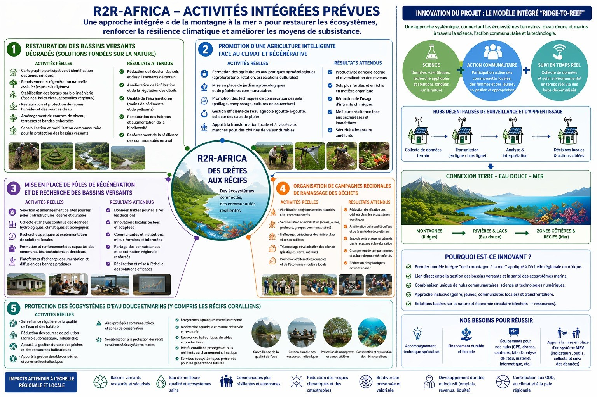

1. Restauration des bassins versants dégradés
Solutions fondées sur la nature : reboisement, stabilisation des berges, protection des zones humides.
Une approche intégrée « de la montagne à la mer » pour restaurer les écosystèmes, renforcer la résilience climatique et améliorer les moyens de subsistance.

Solutions fondées sur la nature : reboisement, stabilisation des berges, protection des zones humides.
Formation agroécologique, conservation des sols, gestion efficace de l’eau.
Collecte de données, recherche appliquée et renforcement des capacités.
Tri, recyclage, valorisation et économie circulaire locale.
Surveillance de la qualité de l’eau, protection des mangroves et des récifs coralliens.
Restauration et agroforesterie autour des producteurs de café.
Développement de chaînes de valeur agricoles durables.
Production de champignons à partir de matière organique, avec les femmes et les jeunes.
Plateforme d’innovation et de sensibilisation à l’environnement et à l’économie circulaire.
Notre nouvelle orientation vers des systèmes alimentaires qui régénèrent sols, eau et moyens de subsistance.